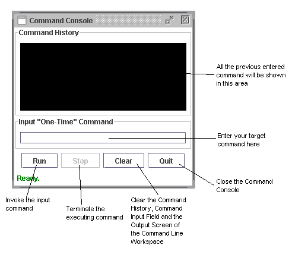

For example, you want to run a command "tree c:" in Windows, this command indeed may take a certain time to finish and the output will contain millions lines of information. RMIAdmin will helps you to operate the command, track the status of the execution, and return you the partial result instantly via buffering technique rather than keep you waiting until the command finished on remote computer.
Execute Remote Command
-
Select "Tools" -> "Command Line", this will brings you to the Command Line Workspace.

- Choose your target server to operate by clicking the "Select Server" button.
-
All the managed server will be loaded into a list box, simply choose your preferred
server, and click "OK" to continue.

-
Next click the "Run Command" button, this will open up a
"Command Console" where you could input the command to be executed.
 - Key-in any preferred command and click the "Run" to invoke the execution, result of the command will be displayed on the Output Screen of the Command Line Workspace shortly.
- You may also terminate and executing command by clicking the "Stop" button, this will stop the process at remote server immediately.
Usage Tips
Note that the Command Console of RMIAdmin is different to telnet/SSH which support a continous login session in the shell environment. Instead, if you need to execute continous command which is co-related, you have to do this by linking all the commands with the "&&" syntax.
For example in Windows, when you need to perform the following:
- Set the %CLASSPATH% variable to include a specific path
- Execute a command or program which is valid only when the above CLASSPATH value has been set
If you try to do this separately with two commands via the Command Console, you will fail obviously. Since the Command Console of RMIAdmin does not retain the same shell environment as the previous command, in other words, the command is for "one-time" only.
Therefore to achieve the above task, here is the workaround:
-
Combine the two commands with the "&&" symbols.
set CLASSPATH=%CLASSPATH%;preferred_path && some_commands_or_program
Another examples if we now have to go into a specific directory and then list our all the .exe files, again if we seperate the "cd to_some_folders" command and the "dir *exe" command, we will fail to retrieve the correct output.
Even the RMIAdmin did successfully complete the "cd to_some_folders" command, however when execute the second command, the RMIAdmin will not retain the position from previous command as the execution path.
Hence, to retrieve the correct output:
-
We must link these two commands again by "&&".
cd preferred_path && dir *.exe
Related Topics:
|
|
Copyright 2005 © RMIAdmin. All rights reserved. |